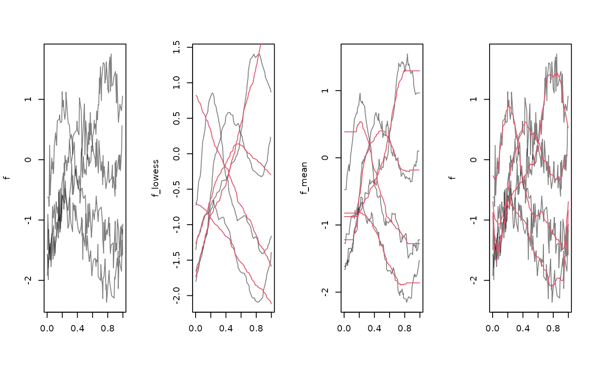

Apply running means or medians, lowess or Savitzky-Golay
filtering to smooth functional data. This does nothing for tfb-objects,
which should be smoothed by using a smaller basis / stronger penalty.
tf_smooth(x, ...)
# S3 method for tfb
tf_smooth(x, ...)
# S3 method for tfd
tf_smooth(x, method = c("lowess", "rollmean", "rollmedian", "savgol"), ...)a tf object containing functional data
arguments for the respective method. See Details.
one of "lowess" (see stats::lowess()), "rollmean",
"rollmedian" (see zoo::rollmean()) or "sgolay" (see pracma::savgol())
a smoothed version of the input. For some methods/options, the smoothed functions may be shorter than the original ones (at both ends).
tf_smooth.tfd overrides/automatically sets some defaults of the used
methods:
lowess uses a span parameter of f = .15 (instead of .75)
by default.
rollmean/median use a window size of k = $<$number of
grid points$>$/20 (i.e., the nearest odd integer to that) and sets fill= "extend" (i.e., constant extrapolation to replace missing values at the
extremes of the domain) by default. Use fill= NA for zoo's default
behavior of shortening the smoothed series.
savgol uses a window size of k = $<$number of
grid points$>$/10 (i.e., the nearest odd integer to that).
library(zoo)
#>
#> Attaching package: ‘zoo’
#> The following objects are masked from ‘package:base’:
#>
#> as.Date, as.Date.numeric
library(pracma)
#>
#> Attaching package: ‘pracma’
#> The following object is masked from ‘package:purrr’:
#>
#> cross
f <- tf_sparsify(tf_jiggle(tf_rgp(4, 201L, nugget = .05)))
f_lowess <- tf_smooth(f, "lowess")
#> using f = 0.15 as smoother span for lowess
# these methods ignore the distances between arg-values:
f_mean <- tf_smooth(f, "rollmean")
#> Warning: non-equidistant arg-values in ‘f’ ignored by rollmean.
#> using k = 5 observations for rolling data window.
#> setting fill = 'extend' for start/end values.
f_median <- tf_smooth(f, "rollmean", k = 31)
#> Warning: non-equidistant arg-values in ‘f’ ignored by rollmean.
#> setting fill = 'extend' for start/end values.
f_sg <- tf_smooth(f, "savgol", fl = 31)
#> Warning: non-equidistant arg-values in ‘f’ ignored by savgol.
layout(t(1:4))
plot(f, points = FALSE)
plot(f_lowess, points = FALSE)
lines(tf_smooth(f, "lowess", f = .9), col = 2, alpha= .2)
plot(f_mean, points = FALSE)
lines(f_median, col = 2, alpha= .2) # note constant extrapolation
plot(f, points = FALSE)
lines(f_sg, col = 2)
